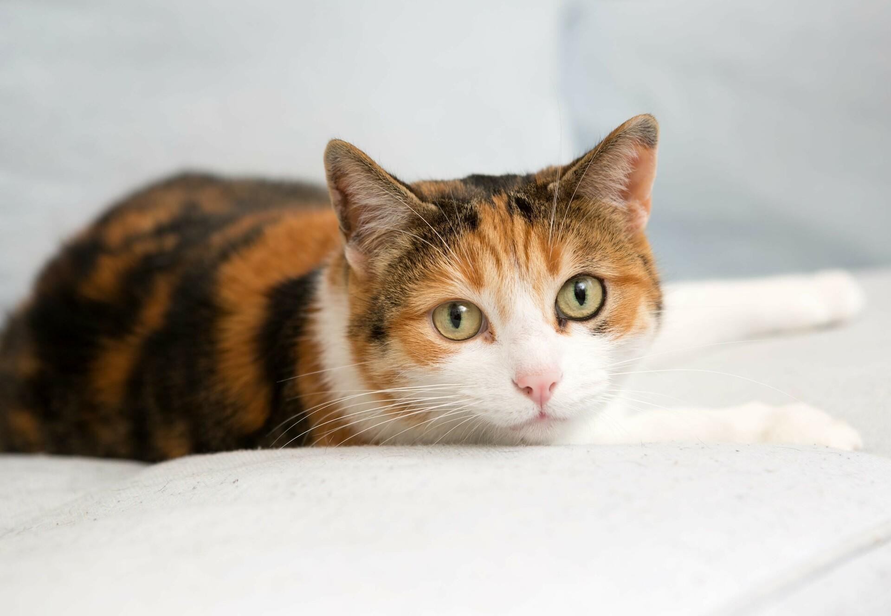

Giftige Lebensmittel für Katzen
Diese Seite zeigt dir, welche Lebensmittel für Katzen gefährlich sind. Die wichtigsten Warnungen stehen in den blauen Kästchen, und ein interaktiver Knopf zeigt dir bei Klick noch ein Beispiel mit Erklärung.
Diese Seite zeigt dir, welche Lebensmittel für Katzen gefährlich sind. Die wichtigsten Warnungen stehen in den blauen Kästchen, und ein interaktiver Knopf zeigt dir bei Klick noch ein Beispiel mit Erklärung.

Schokolade enthält Theobromin und Koffein. Diese Stoffe können bei Katzen Herzrasen, Zittern und Krampfanfälle auslösen.
Schon kleine Mengen Alkohol können bei Katzen zu Erbrechen, Koordinationsstörungen und Atemnot führen. Der Körper kann Alkohol kaum abbauen.
Koffein aus Kaffee oder Energydrinks verursacht Herzrasen, Unruhe und Krampfanfälle. Für Katzen sind bereits geringe Mengen gefährlich.
Klicke auf den Knopf, um eine Erklärung zu erhalten.